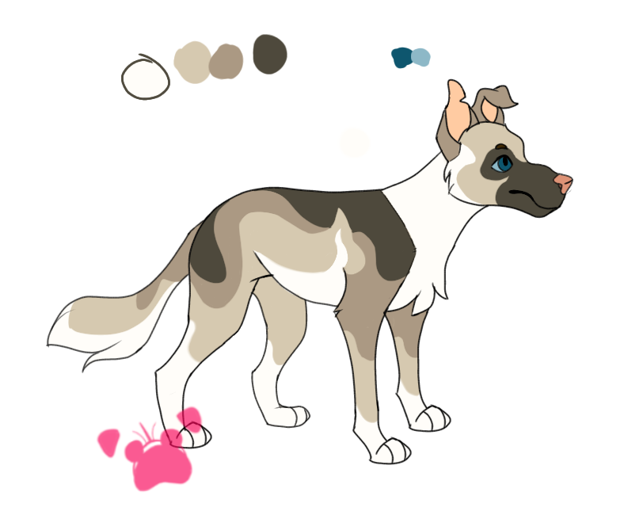

Happy pug animal art
Happy pug animal art
🐶 Terms and Services 🐶
🐾 Getting Started 🐾
To get a commison from me, please fill out the commission form in the commison page. There you will find a overview and price guide for different types of commissons I have to offer.
Make sure to fill out all the fields/forms.Otherwise it will not get through. You would need your name, email,type of commission species of animals and description of what you want. If you have any questions of concerns, please fill out the commison inquiry form in the home page. Thank you.
🐾 Credit, Permissions, and Use 🐾
1. The cilent is allowed to post their commissioned piece on social media sites. However must be given proper visual credit such as watermark or through caption.
2. The cilent can use their commissioned peice for personal use. Watermark must be visible if possible. If not given credit in some other way.
3.Edits, cropping, printing is allowed. However it must be reconizable from the orginal work and must display ther watermark if possible. If not given credit via caption or description etc.
4. Tracing, NFTS, claiming it as your own, and using it for AI training is not allowed.
5. Commercial use of the commissioned peice is allowed if there is prior arrangment. Once an agreement is made, the cilent can use their peice to make profit for their business or Otherwise in any way. Watermark is not needed to be shown in this case. However it is appreciated to be given credit if asked.
6. The artist has the right to the image and use. However it will never be used for any kind of profit or redistustribted. really it will only be used to showcase in their portfolio. However if cilent wishes to not be publically shown, please contanct the artist durning or before the artwork is completed. They will respect your wishes.
7. Please contact the artist for any orders larger then 10 peices. Large orders must be planned in advance as it takes a while do so. If cilent has any questions to large orders ot to dicuss any discounts, please submit a commission inquiry form.
8. Any refunds is case by cases basis and is depended on how much work had been done. Once fully completed it is not refundable however.
🐾 References 🐾
Please try provide at least one visual reference of your character or pet.
It can range from photographs to pencil sketches. Please make sure the references are relevent to the commission you would want. Feel free to add in an color pallet or ask to pick the colors from said photo. Make sure your reference is clear and sharp. You are allowed to use stock images for items and enviorment. If you have no visual references, describe your character in detail.
Here is an example of a reference you could send of your character
🐾 Preparing Your References 🐾
I would need a link to where your photos is stored. Places you can put your photos in is google drive, devianart, toyhouse, imbb, imgur. Make sure to capture the whole body as much as possible. The more detail and more photos the better and more accurate I can draw your characters. For photos please make sure that the animal is sharp and in focus. This is so that I can get the feel on the texture of the fur/ feathers etc. If sending sketches of your character, please give me the overall shape of said character.
Try to get many photos as possible. Preferly at various angles. Please keep all the photos in one files for each commission. Including any other reference such as stock images of cloths, enviroment pics etc. Please avoid using any characters you own or dont have permission to do so.
Describing your character/pet
If unable to provide a visual reference, please give a good description of your character. what is their body type? fur? eye color? patterns? any special features such as missing limb? Here is a example of how you can describe your character: Smokey is a characoal bengal male cat with forest green eyes. His fur is curly and long and has a white underbelly and white tufts of fur on his ears. Smokey is a large tom with large paws.
Describe thierr personality. You do not have to but it gives me a good idea on how to draw them.Like for example if one such character is kind and cheerful then I could draw them with round features or playful poses. are they grumpy? curious? loves to swim? etc.
Describing your commission
Similar to describing your character/pet. please desribe what you would like in your commisson. some guiding questions are as follows. What pose do you want? sitting? prancing? etc. What is the enviorment like? expressions? It does not have to be long just a small description is needed that is all. You are allowed to give a small short sentence when submitting a form and giving more detail once you are contacted.
🐾Commission process 🐾
Once your commission is processed, you will be emailed on the details of your commission. You will be updated on the process and any major changes.
1. rough sketch
The first portion of your commission send to you would be the rouch sketch and send to you for approval. At this stage, any major changes you want on your commison is accepted such as different fur type, body type etc. A rough sketch would give a overall idea of your character or pet. Once you are satisfied with the sketch, I will proceed to make changes and send you the updated rough sketch. Don't hesitate to voice your opinions or speak up durning this stage. You have a maximum of 3 major changes to your piece. after that any major changes will not be accepted. Examples of major changes are poses, outfits, composition etc.
Do not be afraid to ask for any changes while I am working on the next edit. However after the third edit of the rouch sketch is finished. Any major changes will be not accepted. minor changes is allowed such as adding in small acessories, eye shape change, shortening tail etc
2. lineart
Once the sketch is approved and finished, I will proceed with the lineart of your drawing.After its done I will send it to you for approval. Minor changes at these stages is allowed. However I will only allow a maximum 5 minor changes at this stage. Think carefully of what you want. Please be as detailed on waht changes you want as possible. I am unable to read your mind. Thank you.
3. color and final product
Once the lineart is finished, I will proceeed to with coloring your peice. Your peice will be in flat color and you are not allowed to make any major changes and any minor changes is case by case. You are allowed to make any changes to the color. I will only allow a maximum 5 minor changes .
4. final product
Finally I will add shading and lighting to your peice and then render it. NO changes is allowed at this point and once this stage is finished, no refunds will be given. Depending on the peice, you will be given a high quality version of your commissioned peice through your email. For watercolor work, you will be mailed it through your address. Any shipment outside of US will be charged extra to help cover shipping costs.
🐾 Refunds 🐾
After the commisson is fully completed, no refund is allowed. There were plenty of times where the cilent could have spoken up about wanting to cancel or change what they wanted durning the commission process. A full refund is issued before the comission is started and up to the the first edit in the rough sketch stage. After that It all depends on how much the commission is completed.
If in any circumstances I am unable to continue the commission, the cilent will be fully refunded, no matter the stage of the commission. However these cases are very rare so will bery unlikley to happen.